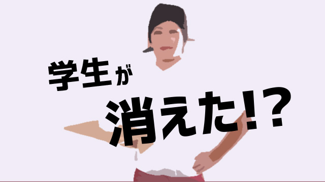

最近労働市場が変化しているようです。といってもマスコミなどが騒ぐような、貧富の差が拡大している、派遣労働者の待遇が悪いとか正規雇用が難しくなっているといった、いわゆる「悲惨な現状」の話ではなくむしろ若者などが働かなくなっていることが目立つのです。
特に大学生など若者の「バイト離れ」が著しい気がします。
先日アルバイトを採用するため大手の求人広告会社の営業マンと話す機会がありましたが、営業マンいわく最近は大学生がどこもまったく集まらない。だからどこも人手不足だとのこと。
かつて高額の報酬につられて学生が殺到した家庭教師や学習塾のアルバイトも、今やサッパリ応募がない。一時流行った居酒屋やコンビニの店員も人員確保に四苦八苦のありさま。
ましてや我々が学生の頃、きついがお金になるというので苦学生（このコトバも死語）が好んだ肉体労働など誰も寄り付きません。
学生といえばアルバイトというイメージはもはや崩壊したといって良いのではないか。
どうして若者は働かなくなったというか、アルバイトに精を出さなくなったのか。
先の営業マンの答え。「今の若者はモノを欲しがりませんから…」
同じ若者の一人である営業マンが言うので妙に説得力があります。
そうなのです。
「今の若者は欲しいモノがない」
80年代バブルのころ大学生など若者は皆こぞって新車を乗り回していたものです。当時は「車を持っていない男など女性から相手にされない」というのが常識でしたから。
デートは男が女の子を送り迎えするのが当たり前。さらに洒落たレストランで食事し流行のファッションに身を包む。
マァ、お金がいくらあっても足りないはず（笑）。当然割りの良いアルバイトに群がるという構図。
私の塾でバイトする大学生諸君もほぼ全員が、バイトで貯めたお金で車を乗り回していました。
要するに当時の若者は欲しいモノがあった。欲しいモノを手に入れるために、少々キツイ労働条件でも必死に働いたということです。
ホンモノの「新人類」の誕生
若者がモノを欲しがらなくなった。つまり物欲がないということ。そして見栄や体裁のために自分を着飾ったりモノを所有する欲求をあまり感じなくなったということは、良く言えば堅実になった。身の丈に応じた生活をするようになったといえるでしょう。
確かに30年以上若者を見てきた私にとっても、今の若者は昔より地道で、過大に自分を大きく見せようとするとんがった面がないと感じられます。
ということで今どきの若者の特徴を思いつくまま並べるとこんな傾向です。
①ガツガツしていない（物欲がなく従って欲しいモノを手に入れようと必死にならない）
②ギラギラしていない（野心や出世欲など少しでも上位をねらおうと頑張ろうとしない）
③バランス感覚が良い（何か特定の分野だけ追究したり人間関係でも自己主張したりと突出することを避けて調和を図る）
④全体に真面目で礼儀正しい（大学の授業にマジメに出席し他者に対しても礼儀正しくふるまう）
⑤ムリせず自由でいたがる（お金などの物質的利益よりも干渉されず自由でいたいと思っている）
まだ他にもありますが一応こんな特徴が目立つところです。
これらの傾向はもちろん簡単に良いとか悪いとか判断できるものではありませんし、全員がこれに当てはまるわけでもありません。
ただ、全体に言えることは今どきの若者が地道で、ムリせず等身大に生きていて物欲から自由であるということです。
これはとても大きな変化だと思います。
なぜかというと「物質的欲求（物欲）から解放された人間」が増大していることを示しているからで、大げさに言うなら日本の近代150年で初めての現象だからです。
私たちは長い間、物質的欲求を満たすことが幸せであるという価値観に支配されてきました。物質至上主義価値観ですね。
快適さや利便性を求めて、あるいは飢えや貧困を避けるためお金や車、衣服や住宅、家電など身の回りにモノを集めることで幸せ（安全）を手に入れようとしてきた。
モノへの執着とはつきつめれば、死の恐怖を回避するための欲望なわけです。
人類の歴史は、社会を作り文明を築き上げた反面、その源には死への恐怖を極限まで減らし安全を確保したいという「生存欲求」そのものとも言えるでしょう。
このブログでも何度か課題にしたマズローの欲求5段階説（＝ココ）でいうなら、もっとも低次の生存欲求に人類は長い間動機づけられてきたということです。
今の若者たちは史上初めて、その「生存欲求」の変形である物欲から解放された世代といえるのではないか。
私が「大きな変化」だと言ったのはそういう意味です。本当の意味で「新人類」の誕生ですね（笑）。
もしそうなら、今の若者たちから続く世代はマズローの言う「より高次な欲」すなわち愛と所属、承認の欲求を越えてついに「自己実現」の域まで達するのではないか。
そういう見通しが成り立つのです。
つまり、生存や安心のためでなく他者に認められたいからでもなく、そういった目先の利害得失やエゴ的満足ではなく、自分の可能性に目覚めて自らの価値を高めていくことで全体に貢献する人間が生まれてくるという期待です。
物欲に駆り立てられる人間から、より精神的にものに価値を置く人間の誕生です。本当なら50年後には国民のレベルがそうとう高くなっているでしょう。
若者よ 自立し冒険せよ！
その兆候はあるし私も大いに期待したいところですが、残念ながら現実問題として今の若者を手放しに肯定できるかというとそこまでは至っていないと思います。
心配な点も多々あります。むしろ逆行している部分もあります。
先の「若者の特徴」でいうなら、物欲がなくガツガツしていないのは良いことでもある反面、若者らしい覇気に欠け全体に活力に欠けた印象があります。
対人関係もバランス感覚は上手く取りますが、他者との衝突を避けてばかりいるならこれまた進歩や改良の余地がなくなってしまうでしょう。
「空気を読み過ぎる」ことの弊害も目立ちます。
全体に大人しく既成の秩序を疑わない、これまでの社会が作った御仕着せのルールに従ってしまい、自らが創造していく気がまえに欠ける。
そして何より懸念されるのは、自立心と冒険心が足りない点です。
先のバイトの応募にも関連しますが、ちょっと肉体的にキツかったり拘束時間が長いとそれだけで嫌がって避けてしまう。バイトしなくても親の援助に頼ることが可能だからです。
説教くさい言い方になりますが、若いうちの苦労はやはりしておいたほうが良い。
条件面が過酷であったり、理不尽な扱いを受けることは多いし、つらいことですが逆にその「苦労」が人間を鍛えその後の能力開花につながるのは自明の真理だからです。
マァ、しかしこれは若者に限った話ではないですね。日本の社会全体に耐性がなくなりつつある。若者は単にその時代の雰囲気（空気？）を反映しているだけとも感じます。
しかし世界に目を転じれば、国際社会は貧困や戦争そして難民や領土問題などまだまだ「肉食キャラ」による闘争の世界です。
私たちだけが豊かで平和であり続ける保証はどこにもありません。日本の若者だけが「草食」を決め込むことはグローバル世界の基準から一人残される恐れがあります。
「タフな交渉力」や「したたかな戦略」をもつ人材をどう育てるか今後の大きな課題と感じています。
あと、これも時代の影響でしょうが「親の介入」が少し過度だと思います。
子どもが小学生から大学生になるまで、親がかりつまり面倒見すぎの傾向が強く自立心が育っていない。
この話は何度かしているのでこれ以上言及しませんが、せっかく今の若者たちが過度な物欲や競争心（闘争心）から自由になりつつあるのに親のコントロール欲求が、自立の芽をつみかねないのは残念なところです。
バイトの話からいつもの教育論になってしまいましたが、基本的に私は今の若者は「新しい良き日本人」の先駆けと信じています。
これからも若い人たちの活躍を温かく見守り励ましたいと思います。
あっそうそう。若者の皆さん、バイトに応募してください！
人手不足なので…お願いします（笑）